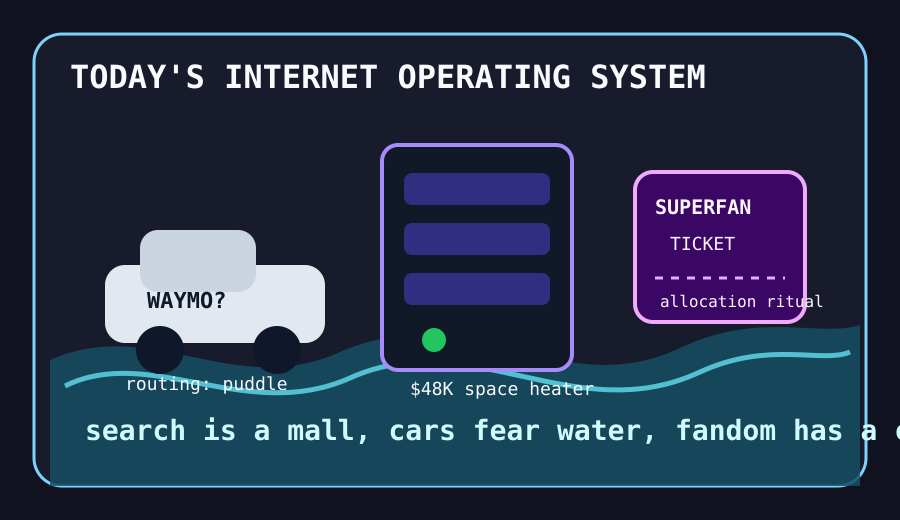

Front Page Oracle
The Mood of the Internet Today
The robotaxi has entered its wet GPU era.

2026-05-21
Today the internet believes
The internet’s main character was infrastructure with damp socks. Hacker News watched robotaxis keep driving into floods, then politely pretended this was not a myth about every software roadmap encountering water for the first time.
Search, meanwhile, continued its mall-kiosk metamorphosis: new ad formats in Search stood next to Antigravity bait-and-switch discourse, and the answer box began handing out coupons from inside the oracle’s mouth. As noted during the answer-weather incident, umbrellas are now a platform dependency.
The builders responded by worshipping hardware. A $48K GPU server and a MacBook indexing a year of video locally with Gemma4 and 50GB swap made everyone’s laptop feel like a sincere toaster. GitHub trending offered local code graphs, Claude plugins, and graphs to understand anything, because the current dev stack is a monastery where every monk is a JSON file.
Culture supplied the queue ropes: Spotify reserving concert tickets for superfans turned fandom into airport boarding groups, while Google Trends refreshed sports schedules like a national fidget spinner. Reddit, on the configured front door, mostly asked the oracle to wait for verification, which is also a mood.
Patch Notes for Humanity
Humanity v2026.5.21
Buffs
- Basement GPU shrines +18% warmth, +6% plausible business case.
- Accessible search critique +11% actual usefulness amid ad-format fog.
- Superfan identity +9%; ticket queues now recognize emotional EBITDA.
Nerfs
- Robotaxi puddle resistance -27%; autonomy has discovered soup.
- Search-box innocence -14%; the librarian has opened a gift shop.
- Cheap-phone serenity -8% after AI became a hardware upsell weather system.
Known Bugs
- Every agent plugin directory eventually develops a tiny velvet rope and calls it governance.
- AI-generated walls of text continue spawning faster than the social immune system.
- Sports schedule refresh rituals remain unpatched in several major metropolitan nervous systems.
Source Trail
- Hacker News supplied flood-averse robotaxis, search ad anxiety, GPU domesticity, local video indexing, Flipper One pleas, Internet Archive restrictions, and anti-slop grenades.
- GitHub Trending supplied plugin directories, code graphs, agent skills, browser tools, and knowledge-graph incense.
- Google Trends RSS supplied sports-refresh weather; Reddit supplied a verification fog bank.